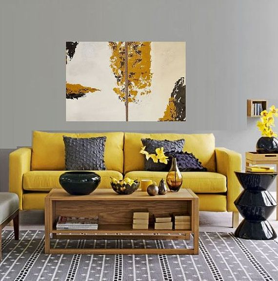
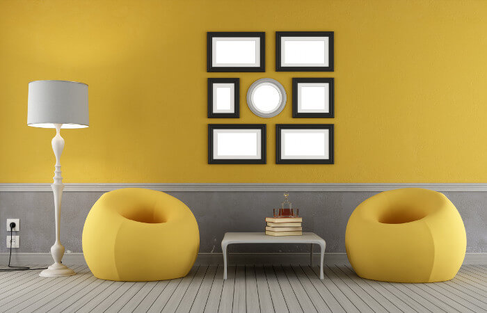
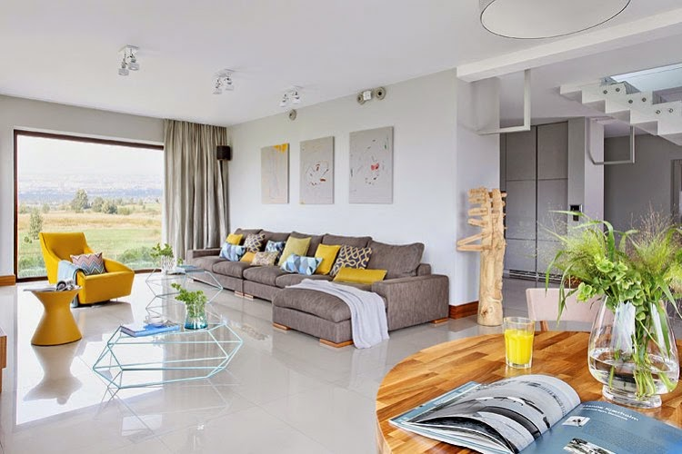

|
Mobiliario
El mobiliario juega un papel crucial en el refinamiento de la nueva instalación e interacción física entre los elementos interiores y quienes los usan.
|  |
|  | Los muebles deben de, comprensivamente, completar su obligación práctica de apoyar la actividad humana sin comprometer la eficiencia y el confort, pero debe también satisfacer el apetito estético de sus usuarios. |
| El mobiliario le permite al diseñador jugar con las formas, materiales y métodos de manufactura, el buen diseño de muebles siempre le sumará a la dimensión estética, a los fines ergonómicos y a la información antropométrica. |  |